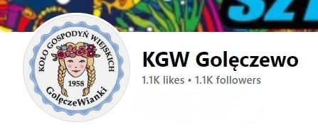
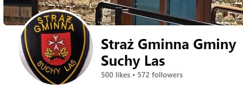
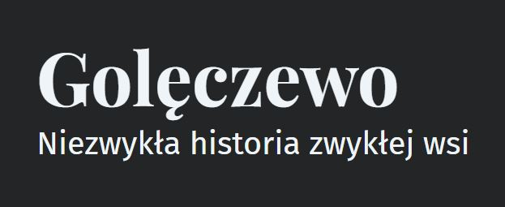

Jeżeli chcesz być na bieżąco z wydarzeniami ważnymi dla miejscowości dołącz do poniższych grup lub polub na Facebooku profile stowarzyszeń.
SOŁECTWO GOLĘCZEWO
Sołtyska wsi pani Katarzyna Kachel regularnie informuje o planowanych inwestycjach lub obwieszczeniach dotyczących Golęczewa na profilu Sołectwa.
KGW GOLĘCZEWO
Aktywne Golęczewianki stworzyły Koło Gospodyń Wiejskich i co roku organizują wydarzenia dla kobiet i nie tylko. 14 lutego jedna Walentynka zagwarantowana.
GOLĘCZEWIANIE
Grupa “Golęczewianie” na Facebooku gromadzi mieszkańców i chętnych do stania się nimi. Zakres tematów szeroki.
STRAŻ GMINNA
Jeżeli Twój pies wybierze się na spacer bez Twojej wiedzy, może napotkać strażników Gminy Suchy Las, a potem stać się sławny na ich stronie na Facebooku. Warto zaobserwować.
GOLENHOFEN
Jeżeli chcesz wiedzieć więcej o historii Golęczewa, najlepszym źródłem wiedzy jest strona Pana Grzegorza Grupińskiego, który regularnie dzieli się fragmentami artykułów sprzed dziesięcioleci czy zdjęciami dawnego Golęczewa.
ZERO WASTE
Na grupie Zero Waste - Gmina Suchy Las mieszkańcy gminy wystawiają rzeczy, które bezpłatnie chcą puścić w drugi obieg.